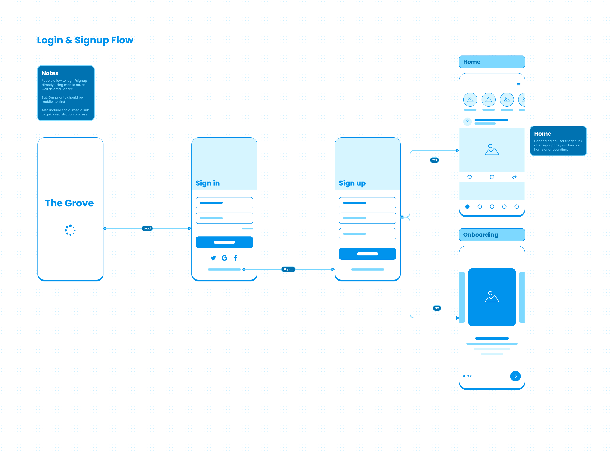
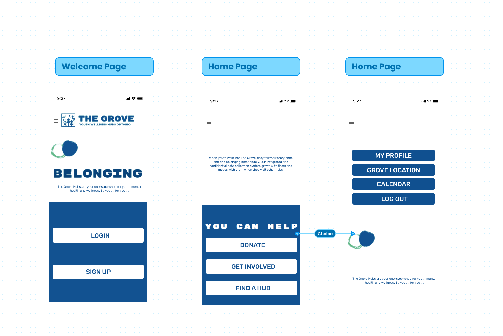

The Grove: A Wellness Hub
A design project supporting The Grove Youth and Wellness Hubs in Ontario, connecting at-risk youth to resources and events.

A design project supporting The Grove Youth and Wellness Hubs in Ontario, connecting at-risk youth to resources and events.
At-risk youth in Ontario often struggle to find and access essential wellness resources, mental health support, and community events. The lack of a centralized, youth-friendly platform makes it difficult for them to connect with available services, leading to missed opportunities for support, engagement, and personal development.
This project provides a digital platform that connects at-risk youth to The Grove Youth and Wellness Hubs’ resources and events. Through an intuitive and accessible design, the platform streamlines access to mental health services, support programs, and community activities, ensuring youth can easily find the help and connections they need.
We analyzed existing youth wellness platforms and mental health support systems to identify gaps in accessibility, engagement, and effectiveness. Key insights included:
A survey was distributed to assess their needs and preferences for accessing wellness resources. Key findings:
Created detailed personas representing our primary users: a 17 year old community member who struggles with anxiety and social isolation.
Developed comprehensive user stories to guide feature development and prioritization.
We implemented a MUSCOW (Musts, Shoulds, Coulds, Won'ts) Feature Map to prioritize features based on user needs and business goals.

We created low-fidelity wireframes to establish core functionality and user flows. Such as login, signup, and navigation.
Developed the final visual design system focusing on clarity and accessibility.
Experience the Grove interface through this interactive prototype!
Conducted usability with Grove community members.